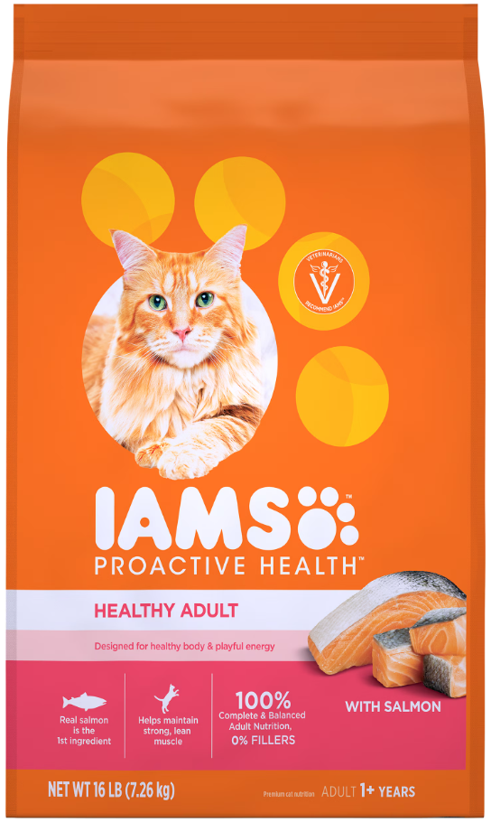
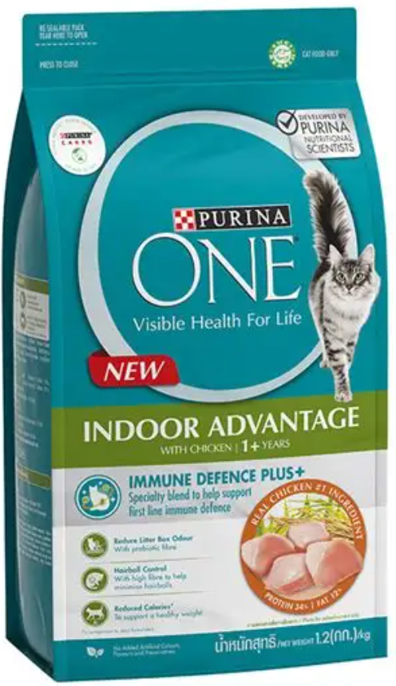

Finding food brands to fit your cats can be tricky, but there are many resources to find one.
Best Cat Food in New Zealand: Brand-by-Brand Comparison Guide – Pet Supply
Best Cat Food NZ: Kibble, Wet & NZ-Made Picks | PawPick NZ

IAMS cat food has a complete and balanced nutrition that meets general food standards while maintaining an affordable price.

Purina One makes a wide range of food that cater to many different dietary requirements. Purine One offers both wet and dry food, and is considered more nutritionally stable than other food brands.